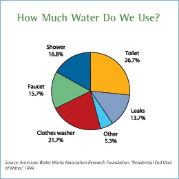

Why This Story
A family of four uses 400 gallons of water a day, and 70 percent of it is used indoors. But "indoors" hides a striking truth: the bathroom — led by the toilet — is the single largest indoor consumer. This story quantifies exactly how much water each everyday fixture actually uses, revealing where a household's water truly goes and pointing to the highest-impact places to save.
Methods & Sources
All figures are quoted verbatim from the U.S. Environmental Protection Agency, WaterSense program, in the fact sheet "Indoor Water Use in the United States" (19january2017snapshot.epa.gov/www3/watersense/pubs/indoor.html). No data transformation was applied to the narrative figures, which follow the EPA's rounded presentation (the toilet's 26.7 percent share is given as "about 27 percent"). The illustrative pie chart reproduces the EPA-hosted breakdown, which is sourced to the American Water Works Association Research Foundation, "Residential End Uses of Water," 1999.
D2 · Editorial Figures

D3 · Accessible Data Table
| Fixture | Older model | WaterSense model | Typical savings |
|---|---|---|---|
| Toilet | Up to 7 gal per flush | Max 1.28 gal per flush | 20–60% less water per flush |
| Showerhead | 2.5 gal per minute | Max 2.0 gal per minute | Save ~2,700 gal per year |
| Bathroom faucet | 2.2 gal per minute | Max 1.5 gal per minute | Save up to ~700 gal per year |
WaterSense column values are U.S. EPA WaterSense certification maxima (toilet ≤1.28 gal/flush, showerhead ≤2.0 gal/min, faucet ≤1.5 gal/min). "Older model" flow rates follow the U.S. EPA WaterSense fact sheet "Indoor Water Use in the United States" as used in the story lead. Annual savings for showerheads and faucets are EPA representative estimates for an average family and are illustrative of typical use; the toilet percentage range (20–60 percent) is quoted from the story. See Methods & Sources.
D4 · Responsive SVG
D5-D6 · System and Documentation
Design system and patterns
This page extends the Module 1 pattern’s design system rather than creating a new one. The visual
language is set with a small set of CSS custom properties in :root: brand navy
(--color-action), Arizona gold accent (--color-accent), neutral text and
muted grays, and border/radius/spacing tokens for consistent cards and spacing across all sections.
Headers, lede, figure cards, responsive inline SVGs, and the accessible data table each reuse these
same tokens so the editorial figures and charts read as one coherent story piece.
Illustrative versus narrative graphics
Three purpose-built graphics support the story. Figure 1 is an illustrative
(JavaScript-independent) reproduction of the EPA-hosted indoor water-use pie chart, saved as a raster
image in assets/indoor-water-figure.jpg. Figure 2 and the
D4 responsive bar chart are hand-authored, accessible, inline SVGs (no image files,
fully scalable) that use the site’s colors and classes. The bar chart is explicitly responsive:
it uses a viewBox plus CSS width:100% so bars scale to the container.
Sources and asset credits
- All narrative figures and chart values come from the U.S. EPA WaterSense fact sheet “Indoor Water Use in the United States,” hosted at the January 2017 snapshot (19january2017snapshot.epa.gov/www3/watersense/pubs/indoor.html).
- Figures 1’s pie-chart breakdown is sourced, per that EPA fact sheet, to the American Water Works Association Research Foundation report “Residential End Uses of Water” (1999).
- WaterSense certification maxima in the D3 table (1.28 gal/flush, 2.0 gal/min, 1.5 gal/min) are EPA WaterSense program standards.
- Figure 2’s “four bathtubs” analogy follows the story lead and commonly cited WaterSense outreach framing; it is an illustrative comparison rather than a measured fixture value.
Transformation notes
No statistical or data transformation was applied. Narrative figures follow the EPA’s own rounded presentation (for example, the toilet’s 26.7 percent share is given as “about 27 percent” in the story). Annual savings figures in the D3 table are representative EPA estimates for an average family and are flagged in the table’s source note as illustrative; actual savings vary with household usage. Units use the shorthand “gal” per the source material.
Accessibility and testing record
- Responsive SVG graphics each include an internal
<title>and<desc>plusrole="img"andaria-labelledby. - The data table uses a descriptive
<caption>,scope="col"column headers, andscope="row"row headers, wrapped in a scrollablerole="region"container for narrow screens. - Color is supplemented by labels and text so no information depends on color alone.
- Verified in the browser by manual inspection at desktop and narrow/tablet widths; each section and figure was reviewed after a hard-refresh cache check to confirm the latest markup was being served.
AI disclosure
This project was developed with the assistance of an AI coding assistant used for drafting page structure, styling patterns, figure markup, and documentation text. All factual claims, figures, and sourcing were reviewed and corroborated against the cited U.S. EPA WaterSense source material before publication, and discrepancy notes (such as the illustrative bathtub analogy) are stated openly above.